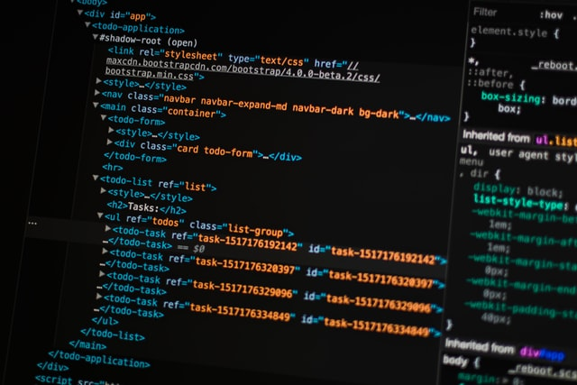

Es considerada la rama más importante de la informática ya que involucra el uso de cualquier computadora, sistema de almacenamiento, redes y otros dispositivos mecánicos, medios y métodos para fundar, resolver, recolectar, resguardar e intercambiar todos los tipos y formas de información electrónica. Dentro de los que son las TI’s, existen equipos físicos denominados Hardware, y también herramientas desarrolladas que cumplen distintas funciones específicas denominadas Software.
El objetivo de esta rama es el de estimular la comprensión de los sistemas para hacerlos más eficientes y productivos. Estudia los sistemas de control, y la comunicación de las personas y las máquinas.
La robótica es la rama de la informática que se encarga del diseño, ensamblaje y operaciones de los robots. Estos suelen ser programados para ahorrar tiempo y sustituir a los humanos en trabajos costosos, pesados, riesgosos y repetitivos.
Es la rama que se encarga de la creación de computadoras para lograr objetivos específicos, por ejemplo, una calculadora.
Esta es la rama de la Informática que se refiere a la automatización de los procesos mediante los cuales se crea, almacena, protege y comparte información dentro del sector empresarial.
Hace referencia a la emisión, aceptación y acopio de información entre dos dispositivos móviles que se ejecutan haciendo uso de las telecomunicaciones.
